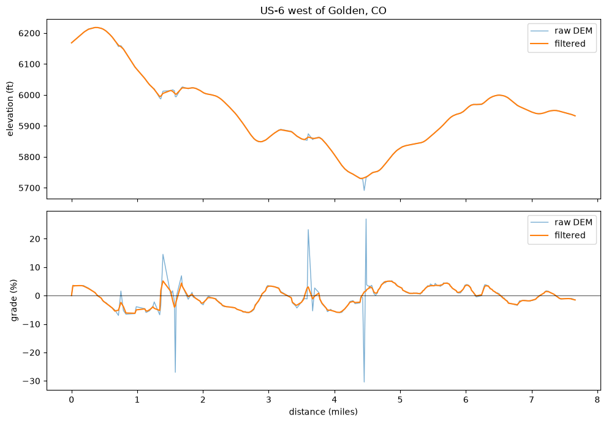

Your First Grade Profile#
This example uses a real GPS trace. It adds elevation and road grade data to the trace.
The trace has 250 points along US-6, west of Golden, Colorado. This is about 7.7 miles of road through varying terrain. The GPS logged a point about once a second. The elevation data comes from the USGS 1/3 arc-second Digital Elevation Model.
This example runs offline.
The DEM tile is a small tile that has been cropped to fit the trace, stored under docs/data/.
See Elevation Data for steps to use the real, full-size tiles.
import matplotlib.pyplot as plt
import numpy as np
from _data import TILE_DIR, load_coords
from gradeit import USGSLocal, gradeit
Loading a trace#
gradeit() accepts many input types like a pandas DataFrame, a numpy array, or a dict in the form {"latitude": [...], "longitude": [...]}.
It also accepts any iterable of (latitude, longitude) pairs.
This example uses the last form, so it does not need pandas yet.
trace = load_coords("golden_creek")
print(f"{len(trace)} points")
print(f"first: {trace[0]}")
print(f"last: {trace[-1]}")
250 points
first: (39.702859, -105.193417)
last: (39.796669, -105.22737)
Choosing an elevation model#
Elevation data comes from an ElevationModel. GradeIT provides two built-in models:
USGSApi()— the online USGS 3DEP service. It needs no setup and sends points in batches to the API endpoint. This is the default model if you pass none.USGSLocal(path)— reads raster tiles stored on your local disk. It is faster than the API model and does not depend on a public service. You must first download the tiles to disk.
This example uses USGSLocal and points it to the our small local tile.
elevation_model = USGSLocal(TILE_DIR)
Appending grade#
The simplest way to use the package is to just call gradeit on your trace with your elevation model. This uses the default filtering provided by the package. Take a look at Filtering Elevation Data for more details on how the filtering works.
result = gradeit(trace, elevation_model=elevation_model)
gradeit() returns a GradeResult, a frozen container of numpy arrays.
GradeResult keeps both the raw and the filtered profiles. Every elevation
and grade field says which one it is: elevation_ft_unfiltered and
grade_dec_unfiltered hold the raw, unmodified DEM lookup, while
elevation_ft_filtered and grade_dec_filtered hold the cleaned values.
print(f"elevation_ft_unfiltered {result.elevation_ft_unfiltered[:4].round(1)} ...")
print(f"elevation_ft_filtered {result.elevation_ft_filtered[:4].round(1)} ...")
print(f"grade_dec_unfiltered {result.grade_dec_unfiltered[:4].round(4)} ...")
print(f"grade_dec_filtered {result.grade_dec_filtered[:4].round(4)} ...")
print(f"distances_ft {result.distances_ft[:4].round(1)} ...")
elevation_ft_unfiltered [6168.2 6172.2 6175.7 6179.4] ...
elevation_ft_filtered [6168.2 6172.1 6175.8 6179.5] ...
grade_dec_unfiltered [0. 0.0364 0.0328 0.0351] ...
grade_dec_filtered [0. 0.0349 0.0347 0.0346] ...
distances_ft [ 0. 109.8 106.6 106.2] ...
Grade is a decimal rise-over-run value. Multiply it by 100 to get a percent value.
total_mi = result.distances_ft.sum() / 5280
climb_ft = result.elevation_ft_filtered.max() - result.elevation_ft_filtered.min()
print(f"\ntrace length {total_mi:.2f} miles")
print(f"elevation range {climb_ft:.0f} ft")
print(f"steepest grade {100 * np.abs(result.grade_dec_filtered).max():.2f}%")
trace length 7.66 miles
elevation range 487 ft
steepest grade 6.22%
Looking at it as a table#
to_dataframe() builds a table from the result, for inspection or
export. This method needs pandas (pip install gradeit[pandas]). Use
to_dict() instead if you do not have pandas; it gives you the same
columns.
df = result.to_dataframe()
df.head()
| latitude | longitude | elevation_ft_unfiltered | distances_ft | grade_dec_unfiltered | elevation_ft_filtered | grade_dec_filtered | |
|---|---|---|---|---|---|---|---|
| 0 | 39.702859 | -105.193417 | 6168.212106 | 0.000000 | 0.0000 | 6168.244181 | 0.0000 |
| 1 | 39.703157 | -105.193362 | 6172.204845 | 109.809715 | 0.0364 | 6172.077144 | 0.0349 |
| 2 | 39.703446 | -105.193305 | 6175.697703 | 106.627300 | 0.0328 | 6175.776668 | 0.0347 |
| 3 | 39.703734 | -105.193250 | 6179.422673 | 106.200791 | 0.0351 | 6179.451272 | 0.0346 |
| 4 | 39.704305 | -105.193135 | 6186.790909 | 210.793970 | 0.0350 | 6186.792822 | 0.0348 |
Plotting the profile#
A plot of the raw profile against the filtered profile shows what the filter did. The two elevation curves sit almost on top of each other. This is expected: filtration removes artifacts, but it does not reshape the terrain. The grade panel shows how GradeIT handled some of the artifacts in the raw profile.
fig, (ax_elev, ax_grade) = plt.subplots(2, 1, figsize=(10, 7), sharex=True)
miles = np.cumsum(result.distances_ft) / 5280
ax_elev.plot(miles, result.elevation_ft_unfiltered, lw=1, alpha=0.6, label="raw DEM")
ax_elev.plot(miles, result.elevation_ft_filtered, lw=1.5, label="filtered")
ax_elev.set_ylabel("elevation (ft)")
ax_elev.legend()
ax_elev.set_title("US-6 west of Golden, CO")
ax_grade.plot(miles, 100 * result.grade_dec_unfiltered, lw=1, alpha=0.6, label="raw DEM")
ax_grade.plot(miles, 100 * result.grade_dec_filtered, lw=1.5, label="filtered")
ax_grade.axhline(0, color="k", lw=0.5)
ax_grade.set_ylabel("grade (%)")
ax_grade.set_xlabel("distance (miles)")
ax_grade.legend()
fig.tight_layout()
plt.show()

Take a look at the grade spike near mile 4.5. This is a good example of an artifact that the filtering is intended to fix. The road at this point actually crosses over the clear creek river. At this point, the bare-earth DEM reports the drop down to the river instead of the elevation of the road itself. The How Filtration Works example examines this artifact in detail.